Halo, Teman-teman!
Pernah nggak, kamu lagi asyik scroll HP, terus lihat foto temanmu diedit jadi lucu-lucuan dan disebar ke banyak grup? Mungkin kamu ikut ketawa. Tapi... gimana ya perasaan temanmu yang ada di foto itu?
Hari ini kita akan belajar tentang cyberbullying atau perundungan digital. Bukan buat menakut-nakuti, tapi supaya kita sama-sama paham dampaknya dan tahu apa yang harus dilakukan. Yuk mulai!
Misi Kita Hari Ini
Kita belajar dengan cara Problem Based Learning. Artinya, kamu dan kelompokmu jadi detektif: membaca kasus, mencari tahu masalahnya, lalu menyusun solusi. Waktu belajar kita 120 menit, dibagi dalam lima tahap.
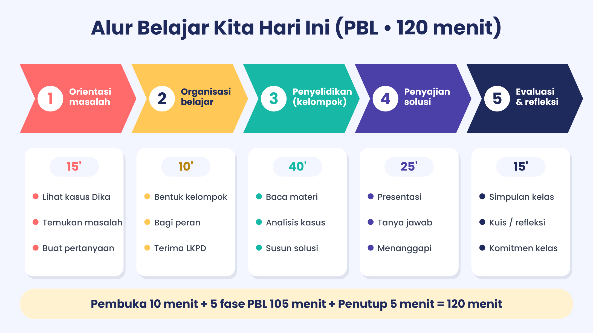
Apa Itu Cyberbullying?
Cyber artinya dunia maya (digital). Bullying artinya perundungan. Jadi cyberbullying adalah perundungan di dunia maya lewat media digital, misalnya media sosial, aplikasi chat, game online, dan kolom komentar.
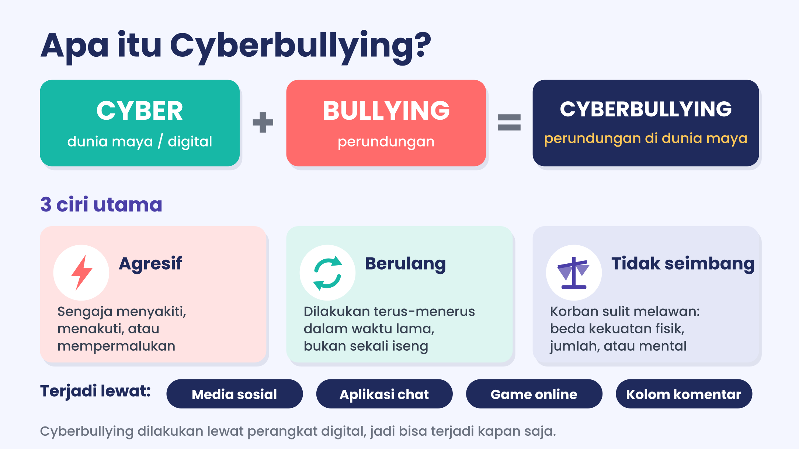
Supaya bisa disebut perundungan, biasanya ada tiga ciri:
- Agresif: sengaja menyakiti, menakuti, atau mempermalukan orang lain.
- Berulang: terjadi terus-menerus dalam waktu lama, bukan sekali iseng.
- Tidak seimbang: korban sulit melawan karena pelaku lebih kuat (bisa fisik, jumlah, atau mental).
Bentuk-bentuknya
Cyberbullying nggak cuma soal kata-kata kasar. Ini bentuk-bentuk yang sering terjadi:
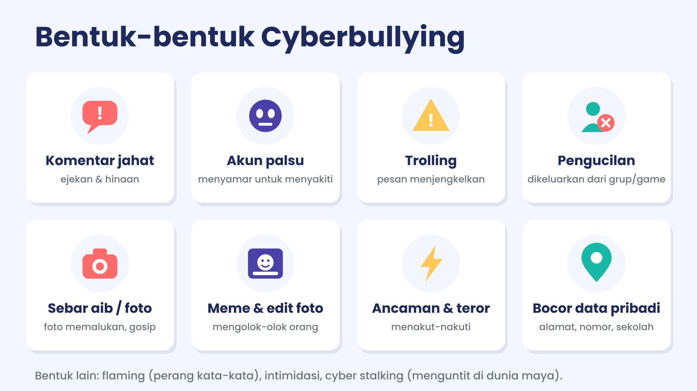
- Komentar jahat: ejekan dan hinaan di kolom komentar atau chat.
- Akun palsu: memakai akun palsu atau akun orang lain untuk mengirim pesan jahat.
- Trolling: mengirim pesan menjengkelkan atau mengancam di media sosial, ruang obrolan, atau game.
- Pengucilan: sengaja mengeluarkan seseorang dari game, grup, atau kegiatan.
- Sebar aib atau foto memalukan: menyebar kebohongan atau foto memalukan, atau bikin grup untuk menjelekkan orang.
- Meme dan edit foto: mengedit gambar orang atau membuat meme untuk mengolok-olok.
- Ancaman dan teror: menakut-nakuti, mengintimidasi, atau menghasut orang lain ikut mempermalukan.
- Membocorkan data pribadi: menyebar atau membuka data dan file pribadi orang lain tanpa izin.
Bullying vs Cyberbullying
Dua-duanya sama-sama menyakitkan. Tapi di dunia maya, korbannya sering merasa lebih berat. Kenapa? Lihat perbandingannya:
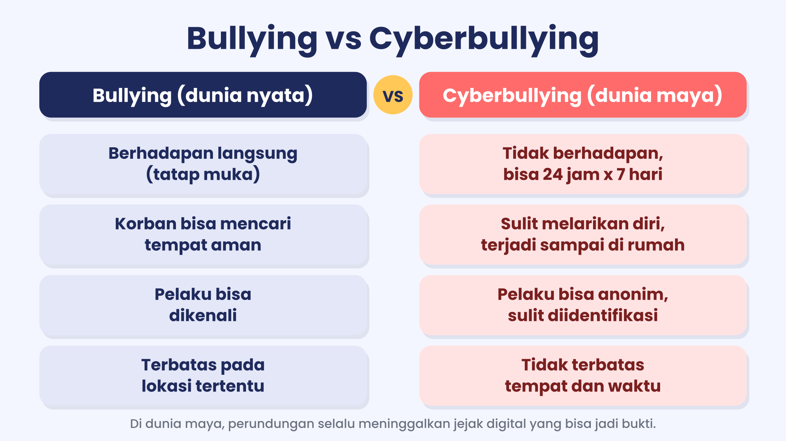
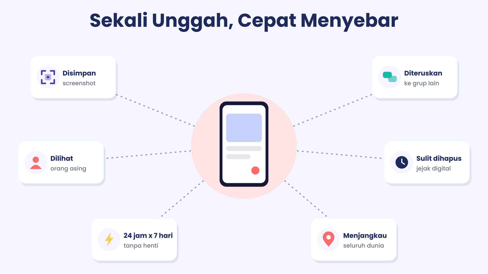
Bayangkan: di dunia nyata, korban masih bisa pulang ke rumah dan merasa aman. Di dunia maya, serangan bisa datang sampai ke kamar sendiri, 24 jam, dari banyak orang, bahkan dari akun yang nggak dikenal.
Bercanda atau Perundungan?
Teman-teman pasti suka bercanda, apalagi di chat. Tapi candaan bisa kelewatan. Cek dengan tes 3 pertanyaan ini:
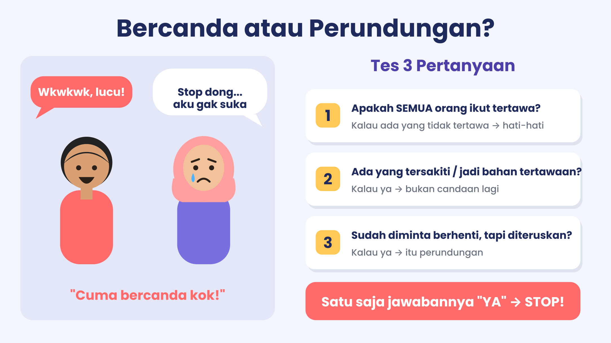
- Apakah semua orang ikut tertawa?
- Apakah ada yang tersakiti atau jadi bahan tertawaan?
- Sudah diminta berhenti, tapi masih diteruskan?
Dampaknya Buat Siapa Saja?
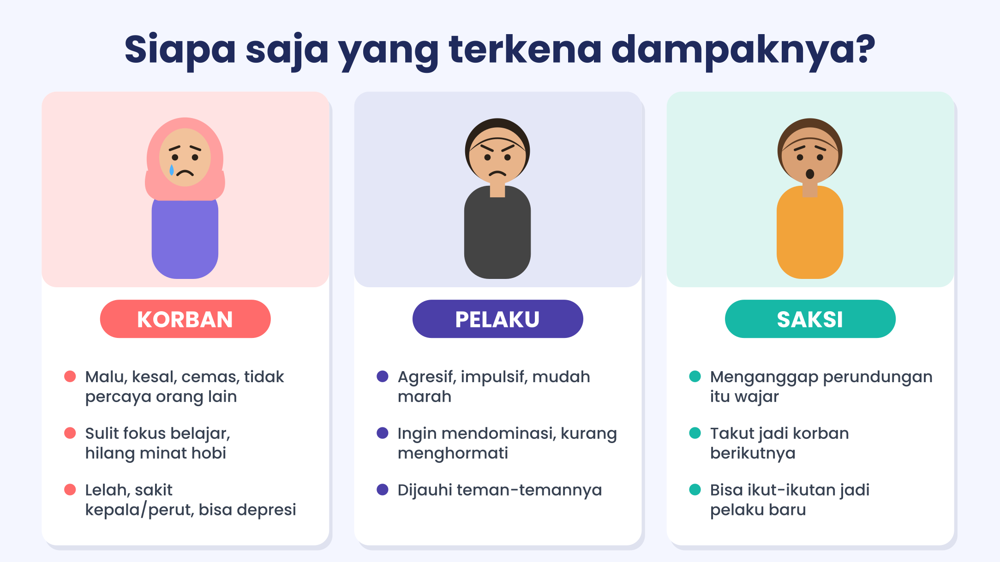
Bagi korban
- Mental dan emosional: merasa malu, kesal, marah, khawatir berlebihan, susah percaya orang lain, hilang minat pada hal yang disukai, dan sulit fokus belajar.
- Fisik: mudah lelah, sakit perut atau sakit kepala, dan bisa muncul gejala depresi.
Bagi pelaku
- Jadi cenderung agresif, impulsif, dan mudah marah.
- Ingin mendominasi dan kurang menghormati orang lain.
- Dijauhi teman-temannya.
Bagi saksi
- Kalau perundungan dibiarkan, orang jadi mengira itu hal yang wajar. Bisa muncul pelaku baru.
- Ada yang ikut-ikutan jadi perundung karena takut jadi korban berikutnya.
Kamu Penonton atau Pembela?
Kalau kamu melihat temanmu dirundung, kamu adalah saksi. Pilihanmu menentukan banyak hal.
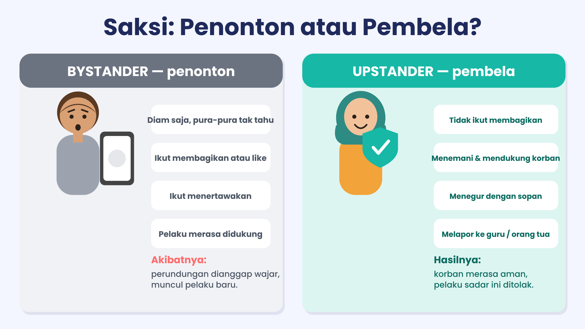
- Jangan ikut membagikan, menekan "suka", atau menertawakan.
- Temani dan dukung korban dengan pesan yang baik.
- Tegur dengan sopan kalau aman dilakukan.
- Laporkan ke guru atau orang tua.
Kalau Aku atau Temanku Jadi Korban
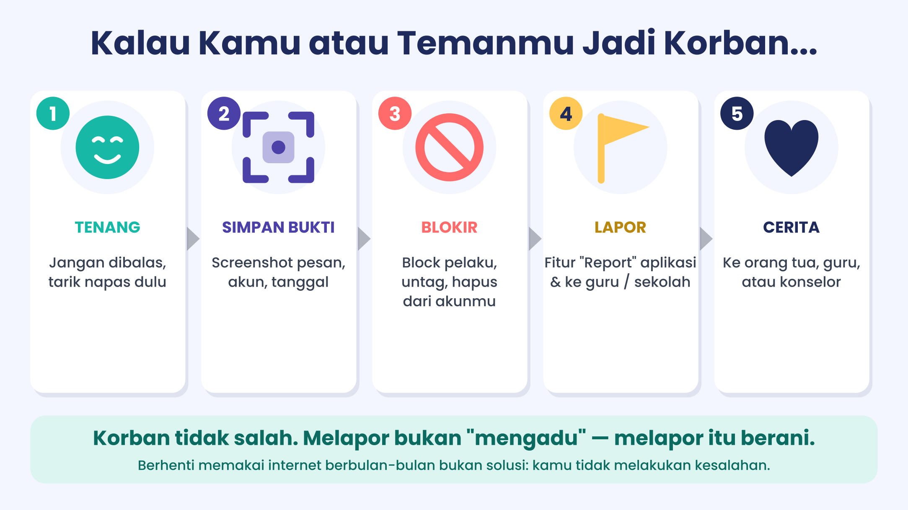
- Tenang. Jangan dibalas. Tarik napas dulu.
- Simpan bukti. Screenshot pesan, nama akun, dan tanggalnya.
- Blokir. Blokir pelaku, un-tag dari foto, dan hapus unggahan jahat di akunmu.
- Lapor. Pakai fitur "Report" di aplikasi, lalu lapor ke guru atau sekolah.
- Cerita. Ceritakan ke orang tua, guru, atau konselor yang kamu percaya.
Ke Mana Aku Bisa Melapor?
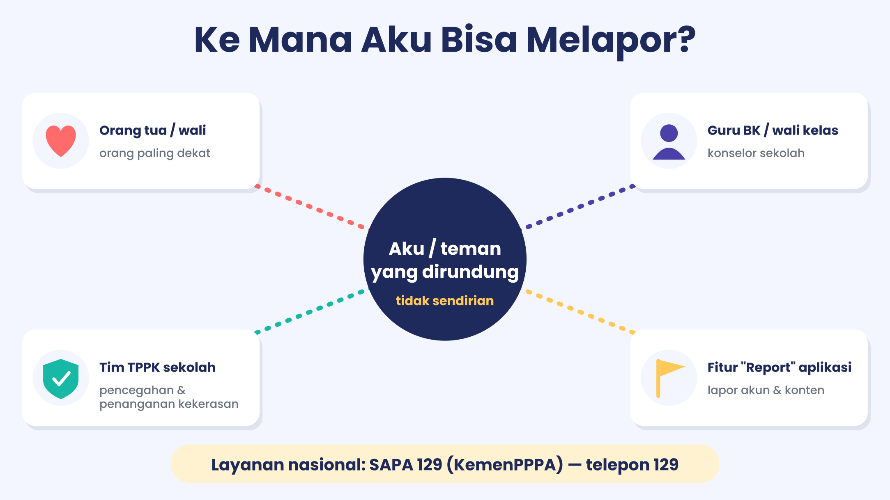
- Orang tua atau wali di rumah.
- Guru BK dan wali kelas di sekolah.
- Tim TPPK sekolah (Tim Pencegahan dan Penanganan Kekerasan).
- Fitur "Laporkan" (Report) di aplikasi media sosial dan game.
- SAPA 129 (layanan KemenPPPA): telepon 129.
Biar Nggak Jadi Perundung atau Korban
- Jaga data pribadi. Jangan kasih alamat rinci, nomor telepon, atau nama sekolah ke orang yang tidak dikenal.
- Pikir sebelum kirim. Tanya dirimu: ini bikin sakit hati orang lain nggak?
- Jangan teruskan pesan atau foto yang merendahkan orang.
- Kalau ada unggahan menyakitkan di halamanmu, hapus dan jangan dibalas. Kalau ada ancaman, laporkan dan blokir.
- Baik di dunia maya, baik juga di dunia nyata.
Ayo Selidiki: Studi Kasus
Sekarang giliran kamu dan kelompokmu! Baca kasus Dika (fiktif), lalu kerjakan LKPD bersama teman-teman.
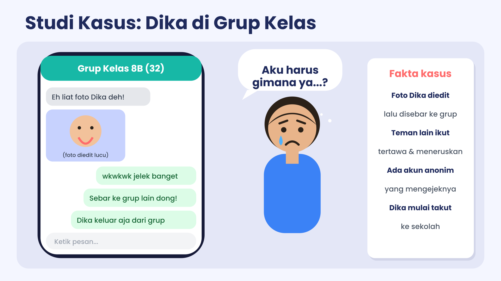
Rangkuman
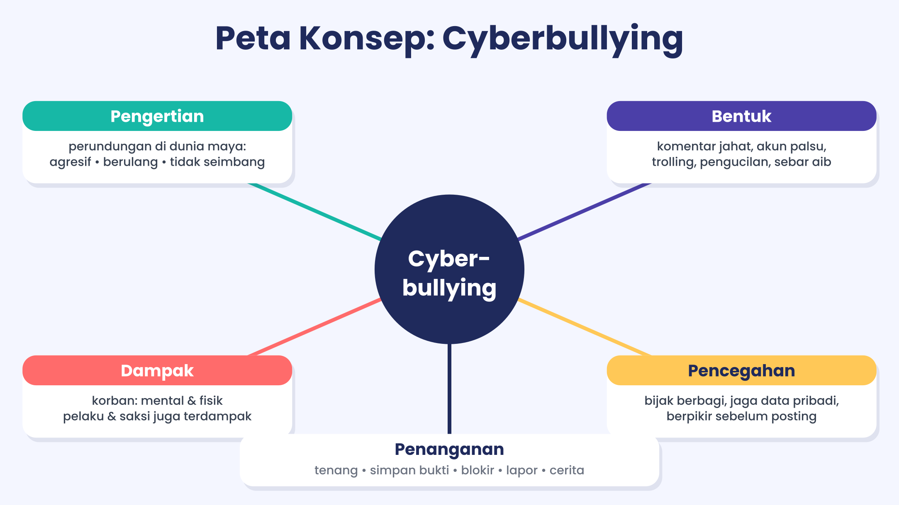
- Cyberbullying = perundungan di dunia maya: agresif, berulang, tidak seimbang.
- Bentuknya banyak: komentar jahat, akun palsu, trolling, pengucilan, sebar aib, meme, ancaman, bocor data.
- Dampaknya dirasakan korban, pelaku, dan saksi.
- Korban: tenang, simpan bukti, blokir, lapor, cerita.
- Kita bisa memilih menjadi pembela, bukan penonton.
Main & Uji Pemahaman
Mini game: Bercanda atau Perundungan?
Baca situasinya, lalu pilih. Ingat tes 3 pertanyaan!
Kuis cepat (5 soal)
Ayo, Renungkan!
Tulis jawabanmu di kertas pribadi. Jawabannya cukup untuk dirimu sendiri, tidak perlu dibacakan.
- Apakah aku sudah paham dampak positif dan negatif media sosial?
- Pernahkah aku meneruskan pesan atau foto tanpa memikirkan perasaan orang lain?
- Pernahkah aku, tanpa sadar, membuat temanku sakit hati lewat chat atau komentar?
- Apakah aku tahu apa yang harus dilakukan kalau aku atau temanku jadi korban?
- Kepada siapa aku akan bercerita kalau aku butuh bantuan?
Kata-Kata Penting
| Istilah | Artinya |
|---|---|
| Cyberbullying | Perundungan di dunia maya melalui media digital |
| Perundung | Orang yang melakukan perundungan |
| Korban | Orang yang menjadi sasaran perundungan |
| Saksi | Orang yang melihat atau mengetahui perundungan |
| Trolling | Pesan menjengkelkan atau mengancam untuk memancing emosi |
| Anonim | Tidak diketahui identitasnya |
| Jejak digital | Rekam aktivitas kita di internet |
| Blokir | Membuat akun tertentu tidak bisa menghubungi kita |
| Report | Fitur untuk melaporkan akun atau konten ke aplikasi |
Sumber: Buku Siswa dan Buku Panduan Guru Informatika SMP/MTs Kelas VIII (Edisi Revisi) Bab IV; UNICEF; Permendikbudristek No. 46 Tahun 2023. Semua kasus dan tokoh dalam materi ini fiktif.